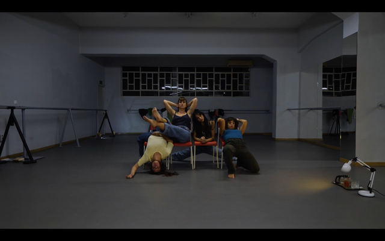

Again the yogurt is over

The work unfolds in five parts—five phases of a day—inside an everyday loop that traps, numbs, and repeats itself continuously. A persistent repetition that reveals the subtle irony hidden in our daily habits.
It is a reflection on wear, endurance, and the effort to step back into the same cycle.
M54, Athens, Greece — May 2024
Corporaiz, Porto, Portugal — June 2023
Credits
Idea / Concept / Choreography: Anthie Stasinou
Performance / Co-creation: Anthie Stasinou, Annamaria Karounou, Antzy Sarigeorgiou, Panagiota Bafouni
Music: Fotios
Texts: Antzy Sarigeorgiou, Kosma Bresson
Text Editing / Dramaturgical Support: Viktoria Sarteri